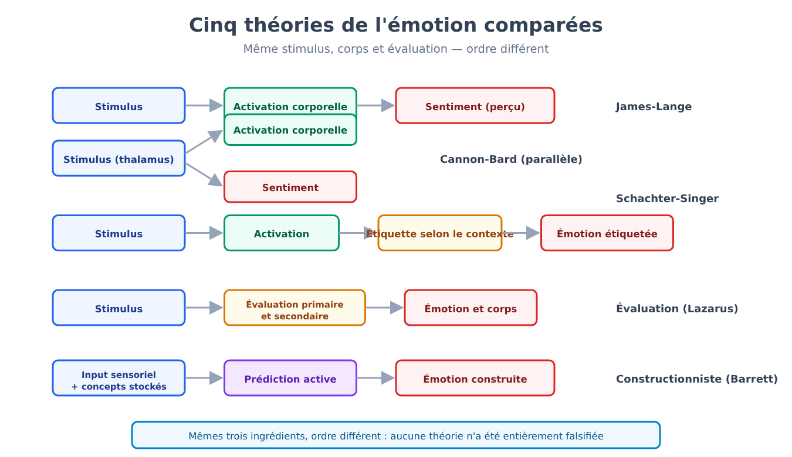
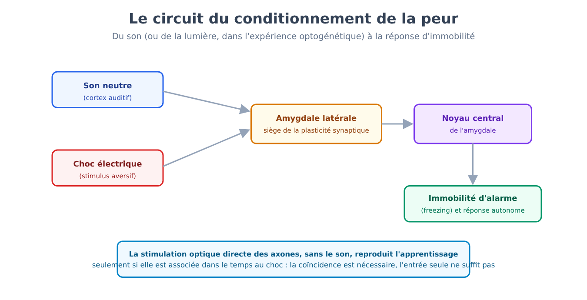
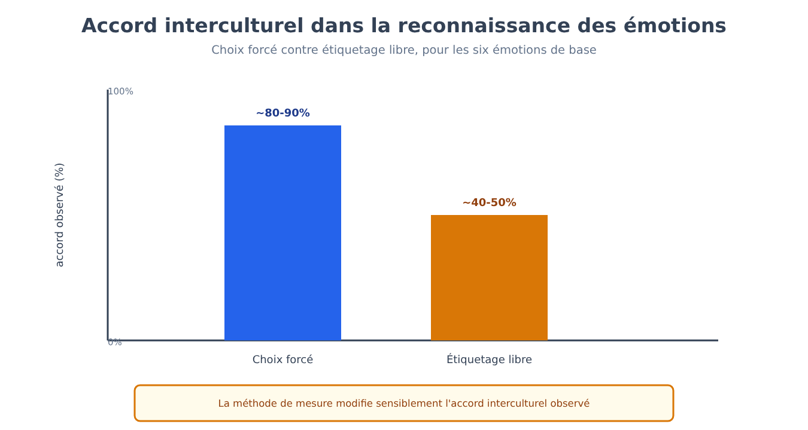
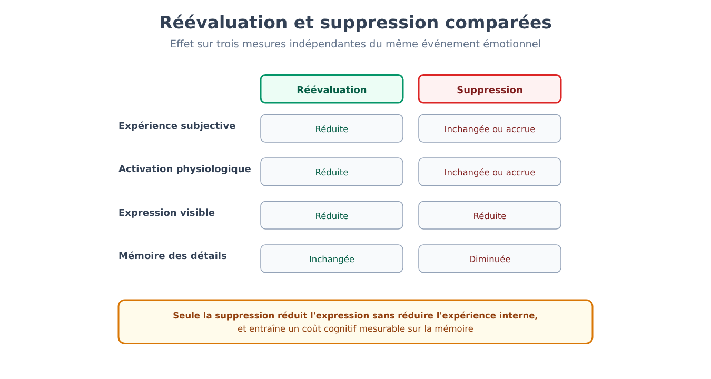
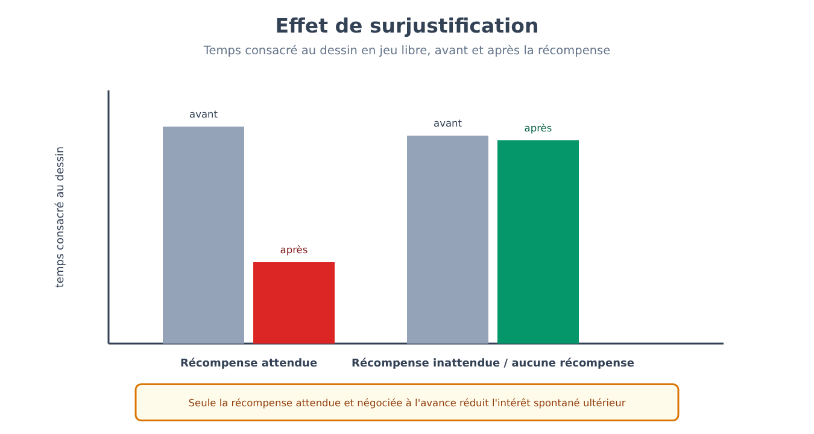
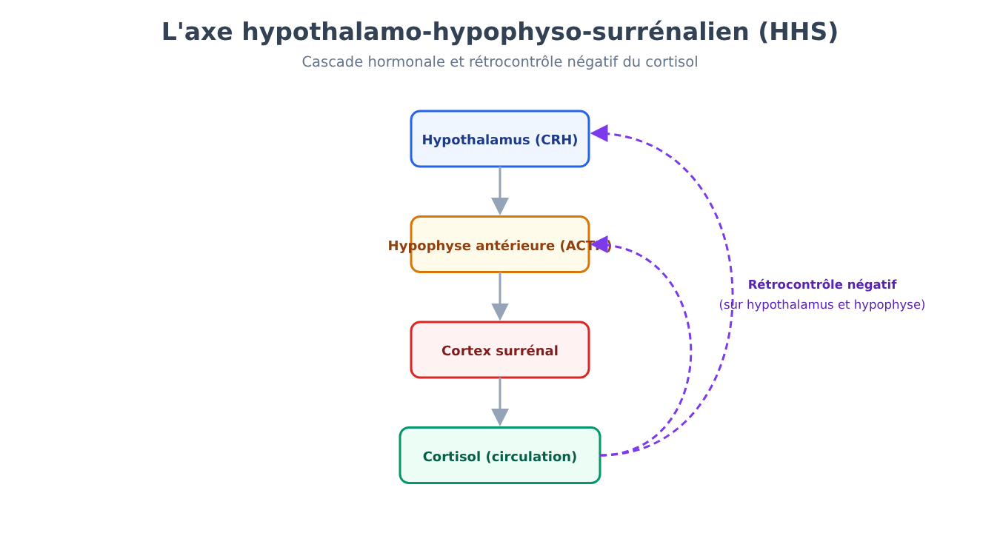
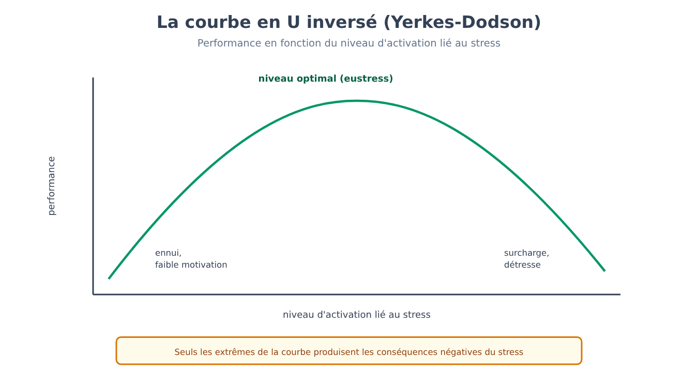

Partie VIII. Émotion et motivation
Chapitre 48 — Qu'est-ce qu'une émotion
[EN DEUX MOTS]
Que se passe-t-il, exactement, lorsqu'on éprouve de la peur ou de la joie ? La réponse la plus intuitive — le sentiment vient d'abord, puis le corps réagit — a été renversée, compliquée et finalement reconstruite à plusieurs reprises dans l'histoire de la psychologie. Ce chapitre expose les principales théories concurrentes, aujourd'hui encore sans vainqueur net, et explique pourquoi même la mesure d'une émotion par un simple questionnaire peut altérer ce que l'on cherche à mesurer.
Un ordre différent pour les mêmes trois ingrédients
Toute théorie de l'émotion travaille avec les mêmes trois éléments — un stimulus dans son contexte, un état corporel, une évaluation cognitive — et les théories diffèrent principalement par l'ordre dans lequel elles les disposent, non par la liste des ingrédients.
La théorie périphérique (peripheral theory, souvent associée au nom de William James et Carl Lange) propose l'ordre le plus contre-intuitif : un stimulus provoque d'abord une activation physiologique automatique (accélération cardiaque, transpiration, tension musculaire), et l'émotion subjective n'est rien d'autre que la perception de cette activation corporelle. On ne tremble pas parce qu'on a peur ; on a peur parce qu'on tremble. La théorie présuppose la spécificité autonomique : chaque émotion devrait avoir sa propre signature physiologique distincte (peur : accélération cardiaque, hausse de la pression, transpiration ; tristesse : ralentissement cardiaque, respiration lente).
Une première objection, connue sous le nom de critique de Cannon-Bard, souligna, en s'appuyant surtout sur des expériences menées sur des animaux dont les viscères avaient été déconnectés du cerveau, que le comportement émotionnel restait intact (chez l'être humain, les études sur les lésions de la moelle épinière ont donné des résultats contrastés : émotions réduites dans les premiers travaux, conservées dans les travaux ultérieurs), et que les changements viscéraux sont trop lents et trop peu différenciés pour expliquer la rapidité et la variété des émotions éprouvées. Le modèle alternatif proposé — stimulus, puis élaboration parallèle et simultanée de l'activation physiologique et du sentiment conscient, toutes deux déclenchées par le thalamus — évitait le problème de la lenteur, mais laissait ouverte la question de savoir comment une même activation physiologique générique peut être éprouvée comme des émotions complètement différentes.
L'activation seule ne suffit pas : il faut une étiquette
[LE PLAN DE L'EXPÉRIENCE]
Dans l'expérience de Stanley Schachter et Jerome Singer (1962), on injecte aux participants de l'épinéphrine (une hormone qui produit une activation physiologique : battements cardiaques accélérés, tremblements, transpiration), présentée comme une vitamine, et on les répartit en deux groupes : à un groupe, on dit honnêtement quels symptômes physiques attendre de l'injection, à l'autre non. Chaque participant attend ensuite dans une pièce avec un complice de l'expérimentateur qui se comporte, selon la condition, de façon euphorique (il joue avec des objets, lance des avions en papier) ou de façon colérique (il se plaint d'un questionnaire, le déchire). Les participants correctement informés des symptômes physiques attribuent leur activation à l'injection et rapportent une émotion légère, indépendamment du comportement du complice. Les participants non informés, privés d'une explication toute prête de leur propre activation, tendent à reprendre l'étiquette émotionnelle suggérée par le contexte social : euphorie en présence du complice euphorique, colère en présence du complice colérique — la même activation physiologique, exactement, étiquetée de façon opposée selon le contexte.
Ce résultat est à la base de la théorie des deux facteurs (two-factor theory) : l'activation physiologique fournit l'intensité de l'émotion, mais c'est l'évaluation cognitive du contexte qui en fournit l'étiquette qualitative — la même activation peut être éprouvée comme de la joie, de la colère, de la peur ou de l'excitation, selon ce que la personne croit en être la cause.
L'évaluation de son propre rapport à l'environnement
Les théories de l'évaluation (appraisal theories, associées surtout aux noms de Magda Arnold et Richard Lazarus) déplacent l'accent du simple étiquetage d'une activation déjà présente vers un jugement évaluatif qui précède et engendre l'émotion elle-même : un événement est évalué au regard de sa pertinence pour les objectifs personnels (une évaluation primaire, qui établit si l'événement est positif, négatif ou non pertinent) et au regard de sa propre capacité à y faire face (une évaluation secondaire, qui considère le contrôle disponible, l'attente, l'attribution de responsabilité). L'annonce d'un licenciement peut engendrer de la colère, du soulagement ou de la peur selon la façon dont elle est évaluée par rapport à ces deux axes — un élément décisif que les modèles purement physiologiques ne peuvent expliquer à eux seuls.
Le cerveau construit l'émotion, il ne l'enregistre pas
Les théories constructionnistes (constructionist theories, associées surtout aux travaux récents de Lisa Feldman Barrett) poussent la perspective de l'évaluation un cran plus loin : elles proposent que le cerveau ne reconnaisse pas passivement une émotion déjà présente dans le corps ou dans le monde, mais la construise activement en combinant l'information sensorielle du moment avec des concepts et des souvenirs déjà emmagasinés, dans un processus de prédiction continue plutôt que de simple enregistrement. Un même événement — par exemple des funérailles avec musique en direct et danses — peut engendrer la célébration ou le deuil pur selon les concepts culturels dont dispose la personne qui le vit, et non à cause d'une différence dans l'événement lui-même.

Aucune de ces cinq familles de théories n'a été falsifiée dans son intégralité ; chacune saisit un aspect réel du phénomène (la spécificité physiologique partielle, le rôle de l'étiquetage cognitif, la centralité de l'évaluation, la construction active de sens), et la synthèse contemporaine la plus répandue combine des éléments d'évaluation et de construction, sans nier un rôle, moins rigide que prévu, à la spécificité corporelle.
Mesurer une émotion peut aussi l'altérer
Le chapitre 1 a introduit le principe général de la réactivité de la mesure (measurement reactivity) : l'acte même d'observer ou de mesurer un état mental peut l'altérer (1 → 48). Les émotions offrent un cas particulièrement direct de ce principe : un questionnaire sur l'humeur qui demande explicitement « à quel point vous sentez-vous triste en ce moment, de 1 à 10 » ne se limite pas à enregistrer un état préexistant, mais peut amener la personne à réfléchir et à élaborer cognitivement une émotion qui, sans cette question, serait restée diffuse et non étiquetée — un processus pas très éloigné, dans sa mécanique de fond, de l'étiquetage cognitif décrit par la théorie des deux facteurs. La conséquence pratique pour la recherche est que la méthode de mesure (un questionnaire explicite vs une mesure physiologique indirecte vs une observation comportementale) n'est jamais neutre par rapport au phénomène mesuré, et que les résultats d'études sur l'émotion utilisant des méthodes différentes doivent être comparés avec cette précaution à l'esprit.
[L'ESSENTIEL DU CHAPITRE]
• Les principales théories de l'émotion (périphérique, Cannon-Bard, deux facteurs, évaluation, constructionniste) partagent les mêmes trois ingrédients — stimulus, corps, évaluation cognitive — et diffèrent surtout par l'ordre dans lequel elles les disposent.
• L'expérience de Schachter et Singer indique que la même activation physiologique peut être étiquetée comme des émotions opposées selon le contexte social disponible ; c'est un résultat très cité mais fragile dans les données originales et non répliqué de façon nette, si bien que la théorie des deux facteurs est aujourd'hui considérée comme seulement en partie étayée.
• Les théories constructionnistes proposent que le cerveau construise activement l'émotion en combinant entrées sensorielles et concepts emmagasinés, plutôt que de se limiter à l'enregistrer.
• Le principe de la réactivité de la mesure, introduit au chapitre 1, s'applique directement aux questionnaires sur l'humeur : la question elle-même peut altérer l'état qu'elle entend mesurer.
Chapitre 49 — Le circuit de la peur
[EN DEUX MOTS]
Une souris peut apprendre à craindre un son après quelques appariements avec une décharge électrique, et cet apprentissage a été retracé jusqu'à un circuit neuronal précis. Ce chapitre expose le plan expérimental de cet apprentissage et, surtout, ce que ces résultats autorisent précisément à dire — et à ne pas dire — sur l'expérience subjective de la peur.
Le conditionnement de la peur : un cas d'application du chapitre 15
Le chapitre 15 a introduit le conditionnement classique et sa réinterprétation en termes d'erreur de prédiction (15 → 49). Le conditionnement de la peur (fear conditioning) en est une application particulièrement étudiée : un stimulus neutre (un son) est apparié de façon répétée à un stimulus aversif (une légère décharge électrique à la patte, dans les modèles animaux), jusqu'à ce que le son seul, présenté sans la décharge, provoque une réponse de peur conditionnée — chez les rongeurs, typiquement l'immobilité d'alarme (freezing), un état d'inhibition comportementale active (et non un simple arrêt passif) qui réduit la probabilité d'être repéré par un prédateur et permet une planification défensive.
[LE PLAN DE L'EXPÉRIENCE]
Dans l'expérience de Jeong-Tae Kwon et ses collègues (2014), les chercheurs ont exprimé un canal ionique sensible à la lumière (channelrhodopsin-2) dans les axones qui acheminent l'information auditive vers l'amygdale latérale (en provenance du thalamus et du cortex auditif), et ont remplacé le son par la stimulation optique directe de ces axones : six appariements d'un éclair de lumière bleue avec une décharge électrique, dans un contexte A. Vingt-quatre heures plus tard, dans un contexte B jamais associé à la décharge, la lumière seule (sans décharge) provoquait une immobilité d'alarme, démontrant que l'apprentissage s'était formé. Deux groupes témoins — lumière jamais appariée à la décharge, ou lumière et décharge présentées mais séparées dans le temps — ne montraient aucun apprentissage. Puisque le seul événement auditif possible était la stimulation directe des axones, et que seul le groupe avec appariement temporel a appris, la stimulation de ces entrées suffit à jouer le rôle de stimulus conditionné, et bloquer la transmission dans l'amygdale latérale pendant l'entraînement empêche l'apprentissage. Les données sont compatibles avec une plasticité au niveau des synapses entre ces entrées et l'amygdale latérale ; la preuve directe que la plasticité est suffisante, dans ces synapses, requiert d'autres expériences. La stimulation de l'entrée seule ne suffit pas : il faut la coïncidence avec l'événement aversif.

L'amygdale ressort de cette expérience et de nombreuses autres comme la structure clé pour la formation d'associations prédictives entre des stimuli neutres et des événements émotionnellement pertinents — une fonction d'apprentissage associatif qui distingue l'amygdale de structures comme l'hypothalamus, qui génèrent des réponses plus réflexes et moins modifiables par l'expérience.
Ce que ces résultats ne démontrent pas
[QUESTION CONTROVERSÉE]
Le conditionnement de la peur chez les rongeurs est l'un des paradigmes expérimentaux les plus solides et les plus répliqués de toute la neuroscience comportementale, mais il demeure l'objet d'un débat interne sérieux sur son interprétation : qu'est-on autorisé à dire de l'expérience subjective, consciente, de la peur ? Une position, historiquement dominante, a traité le « circuit de la peur » (l'amygdale et les structures connexes) comme le substrat direct aussi du sentiment conscient de peur, et pas seulement de la réponse défensive comportementale et physiologique. Le neuroscientifique qui a le plus contribué à isoler ce circuit, Joseph LeDoux, a ensuite proposé une distinction plus prudente : les circuits de survie défensive (qui génèrent l'immobilité, la fuite, l'attaque et les corrélats physiologiques de la menace) sont bien caractérisés et partagés avec d'autres espèces, mais le sentiment conscient de peur requerrait l'activation de processus corticaux plus étendus, liés à la conscience explicite, pas nécessairement identiques à l'activation de l'amygdale seule ni réductibles à elle. Un cas clinique pertinent pour ce débat est celui de patients présentant une calcification bilatérale de l'amygdale (due à une rare maladie génétique) : ces patients ne reconnaissent ni n'éprouvent la peur face à des serpents, des araignées ou des maisons hantées, mais ont manifesté une attaque de panique complète lorsqu'ils étaient exposés à une forte concentration de dioxyde de carbone inhalé — un signe que le système qui génère la réponse à la menace externe visible (médié par l'amygdale) est distinct du système qui génère l'alarme face à une menace interne, chémosensorielle, qui semble acheminée ailleurs. La conclusion partagée par les deux positions est que l'amygdale n'est pas « le centre de la peur » au sens simple et unique : c'est une composante nécessaire pour une classe spécifique de menaces externes apprises, non l'unique substrat possible du sentiment subjectif dans son ensemble.
[L'ESSENTIEL DU CHAPITRE]
• Le conditionnement de la peur applique au domaine émotionnel le modèle de l'erreur de prédiction déjà rencontré dans le conditionnement classique général (chapitre 15).
• Des expériences de manipulation directe du circuit neuronal (stimulation optique des axones projetant vers l'amygdale latérale) ont montré que l'activation d'entrées spécifiques vers l'amygdale latérale, appariée à la décharge, suffit à produire l'apprentissage de la peur, de façon compatible avec une plasticité synaptique à cet endroit.
• L'amygdale est nécessaire pour apprendre à associer des stimuli neutres à des menaces externes, mais les données sur les patients présentant une lésion bilatérale de l'amygdale montrent qu'elle n'est pas l'unique substrat possible de la peur en général : une menace interne (le dioxyde de carbone inhalé) a produit chez eux de la panique malgré l'absence de peur face aux menaces externes visibles.
• Le débat sur le rapport entre circuits de survie défensive (observables, mesurables, partagés avec d'autres espèces) et sentiment conscient de peur reste ouvert et exige de la prudence avant d'assimiler les deux plans.
Chapitre 50 — Expression et reconnaissance
[EN DEUX MOTS]
L'idée que certaines expressions faciales des émotions soient universelles, reconnues de la même façon dans toutes les cultures du monde, est devenue un lieu commun au point de paraître évidente. Ce chapitre expose les études interculturelles classiques qui ont soutenu cette idée, et les critiques méthodologiques plus récentes qui en ont réduit la portée.
L'hypothèse des émotions de base
L'hypothèse des émotions de base (basic emotions hypothesis), développée surtout dans les travaux de Paul Ekman à partir des années 1960, propose qu'un petit ensemble d'émotions (typiquement la colère, la peur, la surprise, la tristesse, le dégoût et le bonheur) ait des expressions faciales spécifiques, universelles et d'origine innée plutôt que culturellement apprise — un produit de l'évolution partagé par toute l'espèce humaine, indépendamment de l'exposition à des cultures différentes.
[LE PLAN DE L'EXPÉRIENCE]
Dans l'étude la plus citée à l'appui de cette hypothèse, Ekman et ses collaborateurs montrèrent des photographies de visages exprimant les six émotions de base à des membres de la population Fore de Nouvelle-Guinée, un groupe n'ayant eu qu'un contact minime ou nul avec la culture occidentale avant l'étude. On lisait aux participants un bref récit émotionnel et on leur demandait de choisir, parmi deux ou trois photographies fournies par l'expérimentateur (une tâche dite à choix forcé, forced-choice), le visage qui correspondait le mieux. Le niveau d'accord entre les participants Fore et les réponses attendues par les chercheurs occidentaux s'est révélé remarquablement élevé pour la plupart des six émotions (à l'exception de la peur, souvent confondue avec la surprise), interprété comme une preuve directe de l'universalité et du caractère inné de ces expressions.
La méthode du choix forcé masque une partie du problème
[IDÉE REÇUE]
Une idée répandue, souvent présentée comme un fait établi hors de tout doute, est que les expressions faciales des six émotions de base sont reconnues de la même manière, automatiquement et sans ambiguïté, dans n'importe quelle culture de la planète. Les données recueillies avec la méthode du choix forcé sont compatibles avec cette idée, mais une limite méthodologique sérieuse en complique l'interprétation : lorsqu'on fournit aux participants une courte liste d'étiquettes parmi lesquelles choisir, l'accord observé peut refléter en partie la capacité de la tâche elle-même à restreindre les options plausibles, et pas nécessairement une reconnaissance spontanée et dénuée d'ambiguïté. Des études plus récentes qui ont remplacé le choix forcé par des tâches d'étiquetage libre (en demandant aux participants de décrire l'expression avec leurs propres mots, sans liste préétablie) ou par des mesures de similarité perçue entre expressions, ont trouvé des niveaux d'accord interculturel systématiquement plus bas, et des schémas de catégorisation des émotions moins uniformes entre les cultures que la méthode du choix forcé ne le suggérait.
Universalité partielle, non uniformité totale
[QUESTION CONTROVERSÉE]
Le désaccord entre chercheurs sur ce thème ne porte pas sur l'existence d'une base biologique partagée pour l'expression émotionnelle — sur ce point, le consensus est large — mais sur la mesure dans laquelle les six catégories discrètes d'Ekman représentent fidèlement la structure réelle de cette base biologique. Une position, qui défend pour l'essentiel le cadre d'origine, souligne qu'un accord interculturel supérieur au hasard, même réduit par la méthode de mesure, reste une donnée solide et répliquée avec des méthodes différentes, et que les expressions faciales demeurent parmi les signaux sociaux interprétés le plus rapidement et le plus constamment à travers les cultures par rapport à presque tout autre domaine comportemental étudié. Une position plus critique, développée surtout dans les travaux de chercheurs comme Lisa Feldman Barrett, Maria Gendron et Carlos Crivelli, soutient que le degré de variation culturelle trouvé avec des méthodes moins contraignantes est trop grand pour être écarté comme du bruit statistique, et que la notion même d'expressions émotionnelles discrètes, universelles et lues automatiquement par un « décodeur » inné est une extrapolation excessive par rapport aux données disponibles — la position constructionniste de l'émotion (chapitre 48) appliquée au domaine de la reconnaissance faciale. Les deux positions s'accordent sur un noyau de similarité interculturelle supérieur au hasard ; le désaccord porte sur l'ampleur de ce noyau et sur la rigidité avec laquelle il est organisé en catégories discrètes et universelles.

[L'ESSENTIEL DU CHAPITRE]
• L'hypothèse des émotions de base propose un petit ensemble d'expressions faciales universelles et innées, étayée par les études interculturelles classiques d'Ekman sur la population Fore de Nouvelle-Guinée.
• La méthode du choix forcé utilisée dans ces études classiques peut gonfler l'accord interculturel observé, en restreignant artificiellement les options de réponse disponibles.
• Des études plus récentes avec étiquetage libre trouvent un accord interculturel réel mais systématiquement plus bas et moins uniforme que ne le suggérait la méthode classique.
• Le débat actuel ne porte pas sur l'existence d'une base biologique partagée pour l'expression émotionnelle, mais sur la rigidité avec laquelle elle s'organise dans les six catégories discrètes et universelles proposées par l'hypothèse d'origine.
Chapitre 51 — Régulation émotionnelle
[EN DEUX MOTS]
Toutes les stratégies pour gérer une émotion indésirable ne fonctionnent pas de la même façon, ni au même coût. Ce chapitre expose la comparaison expérimentale entre deux des stratégies les plus étudiées, et explique pourquoi le construit d'intelligence émotionnelle — énormément populaire hors de la psychologie académique — mesure, dans la pratique de recherche, bien moins que ce qu'on lui attribue communément.
Réévaluer ou réprimer : deux stratégies, deux coûts différents
Parmi les stratégies de régulation émotionnelle (emotion regulation) les mieux étudiées, deux reviennent avec une fréquence particulière dans la recherche expérimentale : la réévaluation cognitive (cognitive reappraisal), qui consiste à réinterpréter la signification d'une situation émotionnellement chargée avant ou pendant son apparition (par exemple, interpréter un examen difficile comme un défi stimulant plutôt que comme une menace), et la suppression expressive (expressive suppression), qui consiste à inhiber les manifestations extérieures d'une émotion déjà en cours, sans en modifier l'interprétation sous-jacente (garder une expression neutre tout en éprouvant intensément l'émotion).
[LE PLAN DE L'EXPÉRIENCE]
Dans une série d'études de laboratoire, on montre aux participants des films au contenu émotionnellement négatif (par exemple des scènes chirurgicales explicites), et on les affecte au hasard à une condition de réévaluation (consigne de réinterpréter la scène de façon détachée, par exemple comme une reconstitution cinématographique), à une condition de suppression (consigne de ne montrer aucune émotion visible), ou à une condition témoin sans consignes spécifiques. On mesure simultanément l'expérience émotionnelle subjective rapportée, l'activation physiologique (par exemple la conductance cutanée), et dans certains plans aussi les performances de mémoire pour les détails de la scène. Dans le plan classique (Gross, 1998, avec un film chirurgical), la réévaluation réduit l'expérience subjective négative et l'expression, sans augmenter l'activation physiologique (d'autres études trouvent aussi des réductions physiologiques, si bien que le tableau est mitigé). La suppression réduit l'expression visible de l'émotion mais non l'expérience subjective, et peut augmenter l'activation sympathique, et elle comporte en outre un coût cognitif mesurable : une dégradation de la mémoire pour les détails de l'événement, cohérente avec l'idée que supprimer requiert des ressources attentionnelles continuellement mobilisées pour surveiller sa propre expression.

Un coût supplémentaire de la suppression, documenté dans des études sur des interactions sociales réelles plutôt qu'en laboratoire seulement, concerne le plan interpersonnel : la personne qui interagit avec quelqu'un qui supprime son émotion tend à percevoir l'interaction comme moins authentique et plus pénible, un effet qui ne s'observe pas dans la même mesure avec la réévaluation.
Un construit surchargé d'attentes
L'intelligence émotionnelle (emotional intelligence), dans sa formulation académique originale (le modèle de Peter Salovey et John Mayer), définit une capacité relativement circonscrite : percevoir avec exactitude les émotions propres et celles d'autrui, les comprendre, et les utiliser pour faciliter la pensée et la décision. Mesurée avec des tests de performance (dans lesquels il existe des réponses objectivement plus ou moins correctes, et non seulement une auto-évaluation), cette capacité montre des corrélations modestes mais réelles avec certains résultats de vie, distinctes tant de l'intelligence générale que des traits de personnalité.
[IDÉE REÇUE]
Dans la vulgarisation populaire, surtout à partir de sa diffusion médiatique dans les années 1990, le construit d'intelligence émotionnelle a souvent été présenté comme un prédicteur de la réussite dans la vie — professionnelle, relationnelle, personnelle — plus puissant que le quotient intellectuel traditionnel. Cette affirmation dépasse considérablement ce que la recherche sur le construit, dans sa version mesurée avec des tests de performance, a effectivement établi : les corrélations trouvées entre intelligence émotionnelle et résultats de vie, une fois statistiquement contrôlées pour l'intelligence générale et pour les traits de personnalité déjà connus (en particulier la conscienciosité et la stabilité émotionnelle), s'avèrent généralement modestes, et non de l'ampleur suggérée par la vulgarisation populaire. Un problème méthodologique supplémentaire concerne les questionnaires d'auto-évaluation de l'intelligence émotionnelle (distincts des tests de performance), largement utilisés dans le contexte organisationnel et dans la sélection du personnel : ces instruments mesurent en grande partie la perception qu'une personne a de ses propres capacités émotionnelles, et pas nécessairement la capacité elle-même, et ils se recoupent substantiellement avec des mesures de personnalité déjà existantes, ce qui soulève des doutes sur leur validité incrémentielle, c'est-à-dire sur leur capacité à prédire quelque chose que les tests de personnalité déjà consolidés ne prédisent pas déjà.
Ce schéma — un construit psychologique doté d'un noyau de validité réelle mais circonscrite, suivi d'une expansion populaire qui lui attribue un pouvoir explicatif bien plus vaste que ne le soutiennent les données — rappelle directement un schéma déjà rencontré à propos de l'inconscient (51 → 31) : là aussi, un construit aux solides bases empiriques dans un domaine restreint (les processus non conscients décrits au chapitre 31) a été étendu, dans la culture populaire, bien au-delà de ce que soutient la recherche, jusqu'à en faire une explication universelle de presque tout comportement humain. L'intelligence émotionnelle n'est pas un construit vide — sa version mesurée avec des tests de performance possède une validité réelle et circonscrite — mais son usage populaire en a systématiquement gonflé la portée explicative.
[L'ESSENTIEL DU CHAPITRE]
• La réévaluation cognitive réduit l'expérience subjective négative et l'expression d'une émotion, avec des effets physiologiques plus incertains et sans coûts de mémoire dans les plans classiques ; la suppression expressive ne réduit que l'expression visible, laissant inchangée ou augmentée l'expérience interne, avec un coût cognitif et social mesurable.
• L'intelligence émotionnelle, dans sa version académique mesurée avec des tests de performance, possède une validité réelle mais modeste une fois contrôlées l'intelligence générale et la personnalité.
• La version populaire du construit en a systématiquement gonflé la portée prédictive, un schéma d'expansion populaire au-delà des données déjà rencontré à propos des processus non conscients au chapitre 31.
• Les questionnaires d'auto-évaluation de l'intelligence émotionnelle, distincts des tests de performance, soulèvent des doutes spécifiques sur leur validité incrémentielle par rapport à des mesures de personnalité déjà existantes.
Chapitre 52 — Motivation
[EN DEUX MOTS]
Pourquoi agit-on ? Certaines impulsions à l'action découlent de déséquilibres physiologiques à corriger, d'autres d'un signal d'apprentissage lié à la récompense, d'autres encore semblent naître de l'activité elle-même, indépendamment de toute récompense externe. Ce chapitre expose ces trois registres de la motivation, et la manière dont un effet classique sur la force de volonté n'a pas résisté à une vérification à grande échelle.
La motivation comme effecteur de l'homéostasie
La faim, la soif et l'inconfort dû au froid ne sont pas de simples sensations accessoires (la pression du sommeil du chapitre 26 en est un cas voisin) : ce sont des effecteurs comportementaux de systèmes homéostatiques, conçus par l'évolution pour pousser l'organisme à corriger lui-même un écart par rapport à son équilibre interne (taux de glucose, bilan hydrique, température corporelle). Ce premier registre de la motivation — appelons-le motivation homéostatique — partage avec les autres systèmes de régulation physiologique la même structure à capteur, centre de contrôle et effecteur, appliquée ici à un effecteur comportemental volontaire plutôt que seulement autonomique ou neuroendocrinien.
La récompense comme signal d'apprentissage, et pas seulement de plaisir
Un deuxième registre concerne la motivation liée à la récompense, et ici le chapitre 15 avait déjà introduit, à propos du conditionnement classique, le modèle de l'erreur de prédiction (15 → 52) : l'apprentissage procède non de la simple co-occurrence d'événements, mais de l'écart entre ce qui arrive et ce qui était attendu. Les chapitres 15 et 22, en traitant du conditionnement et de la neurochimie de la récompense, avaient montré comment ce même principe mathématique, développé pour le conditionnement comportemental sans aucune référence au cerveau, trouvait un correspondant direct dans l'activité des neurones dopaminergiques, qui signalent précisément l'erreur entre la récompense attendue et la récompense reçue, et non la récompense elle-même (22 → 52).
[FORMULE]
Une version plus générale de ce principe, développée dans l'apprentissage par renforcement computationnel, étend l'erreur de prédiction à des chaînes d'événements espacées dans le temps, et pas seulement à un unique appariement stimulus-conséquence :
δ_t = r_t + γ · V(s_{t+1}) − V(s_t)
Où :
• δ_t est l'erreur de prédiction au temps t (le signal qui, dans le cerveau, correspond à l'activité phasique des neurones dopaminergiques).
• r_t est la récompense effectivement reçue au temps t.
• V(s_t) est la valeur estimée de l'état dans lequel on se trouve au temps t, c'est-à-dire la quantité de récompense future que l'on attend à partir de cet état.
• V(s_{t+1}) est la valeur estimée de l'état suivant.
• γ (gamma) est un facteur d'actualisation compris entre 0 et 1 qui réduit le poids des récompenses futures par rapport aux récompenses immédiates.
Exemple de calcul. Considérons un singe qui apprend qu'une lumière (état s_t, valeur estimée V(s_t)=0,2) précède de façon fiable une récompense de jus de fruit (r_t=1) sans autres états intermédiaires pertinents (V(s_{t+1})=0), avec γ=0,9. Au moment de la récompense : δ_t = 1 + 0,9·0 − 0,2 = 0,8. Le signal positif, élevé par rapport à une récompense de 1, reflète que la récompense a été très supérieure à ce que la valeur estimée de l'état prévoyait : l'animal a encore beaucoup à apprendre. Avec l'apprentissage répété, V(s_t) se rapproche progressivement de 1 et δ_t se rapproche de zéro : la récompense devient pleinement prévue, et — comme le montrent les enregistrements des neurones dopaminergiques du chapitre 15 — le signal dopaminergique à la récompense elle-même disparaît, se déplaçant au contraire vers le stimulus prédictif (la lumière) au moment où il apparaît en premier.
Faire quelque chose pour le plaisir de le faire, et non pour la rémunération
Un troisième registre concerne la distinction entre motivation intrinsèque (intrinsic motivation), l'engagement dans une activité pour la satisfaction qui découle de l'activité elle-même, et motivation extrinsèque (extrinsic motivation), l'engagement guidé par une conséquence externe distincte de l'activité (une rémunération, une note, un éloge). Un résultat contre-intuitif, documenté à plusieurs reprises, est que l'introduction d'une récompense externe pour une activité déjà intrinsèquement agréable peut, dans certaines conditions, réduire la motivation intrinsèque d'origine au lieu de s'y ajouter.
[LE PLAN DE L'EXPÉRIENCE]
Dans l'étude classique de Mark Lepper, David Greene et Richard Nisbett (1973), des enfants manifestant déjà un intérêt spontané pour le dessin sont répartis en trois groupes : un groupe reçoit la promesse d'une récompense (un certificat décoratif) pour dessiner, avant de commencer l'activité ; un deuxième groupe reçoit la même récompense mais sans qu'elle ait été promise à l'avance (une surprise, après avoir dessiné) ; un troisième groupe ne reçoit aucune récompense. Dans les semaines suivantes, observés dans un contexte de jeu libre sans aucune attente de récompense, les enfants du groupe à récompense attendue consacrent nettement moins de temps spontané au dessin que les deux autres groupes, dont les niveaux d'intérêt restent pour l'essentiel inchangés par rapport à la mesure de départ. L'interprétation proposée est que la récompense attendue et explicitement négociée déplace l'attribution causale de son propre comportement, de l'intérêt intrinsèque pour l'activité vers la récompense externe — un effet appelé effet de surjustification (overjustification effect) : l'activité, jadis une fin en soi, est recatégorisée comme un moyen d'obtenir autre chose, et perd une partie de sa valeur intrinsèque dès lors que cet autre chose n'est plus garanti.

L'effet n'est pas universel : les récompenses inattendues, les récompenses liées explicitement à la qualité de la performance plutôt qu'à la simple participation, et les activités à très faible intérêt intrinsèque de départ montrent des schémas différents ou absents — un point qui a alimenté un débat interne sur la portée pratique réelle de l'effet hors du laboratoire, par exemple dans la conception de systèmes d'incitation scolaires ou professionnels.
Un effet classique qui n'a pas résisté à une vérification à grande échelle
[TIENT-ON ENCORE ?]
Pendant des décennies, un modèle influent a décrit la maîtrise de soi comme une ressource limitée qui s'épuise à l'usage, comme un muscle qui se fatigue — le phénomène appelé épuisement du moi (ego depletion) : après avoir exercé la maîtrise de soi dans une tâche (par exemple résister à la tentation de manger un dessert), les personnes montreraient de moins bonnes performances dans une tâche ultérieure, sans rapport, qui exige elle aussi de la maîtrise de soi. Le modèle a engendré des centaines d'études et une popularité considérable, y compris hors du milieu académique, comme explication de phénomènes quotidiens (la fatigue décisionnelle, les écarts de régime du soir). Une tentative de réplication à grande échelle, dirigée par Martin Hagger, Nikos Chatzisarantis et leurs collègues (2016), avec vingt-trois laboratoires indépendants dans le monde entier qui ont suivi un protocole convenu à l'avance et préenregistré sur plus de deux mille participants au total, a trouvé un effet moyen proche de zéro, en net contraste avec les estimations d'effet moyen à grand rapportées par les méta-analyses de la littérature originale. Le modèle dans sa forme originale ne résiste plus à cette vérification à grande échelle : l'écart entre les méta-analyses originales (fondées sur des études de laboratoire plus petites et plus hétérogènes) et la réplication préenregistrée est aujourd'hui attribué surtout, d'après les analyses de correction des biais, à des problèmes de publication sélective et à une définition opérationnelle de l'épuisement trop variable d'une étude à l'autre ; les partisans originels du modèle ont contesté le protocole de la réplication, mais un test multisite ultérieur a donné lui aussi un effet proche de zéro. Reste ouverte la possibilité qu'une version plus limitée ou mieux spécifiée du phénomène existe dans des conditions spécifiques, mais la forme générale et largement popularisée du modèle — la maîtrise de soi comme ressource unique qui s'épuise de façon uniforme et transférable entre des tâches très différentes — n'a pas passé l'épreuve de la vérification à grande échelle.
Ce troisième registre de la motivation — l'activité qui est une fin en soi, son érosion possible par des récompenses externes mal calibrées, et les limites réelles (plus modestes qu'on ne le pensait) de la maîtrise de soi comme ressource épuisable — se rattache aussi à un thème rencontré dans la tradition psychanalytique : le chapitre 11 avait décrit la compulsion de répétition comme une poussée à répéter un comportement indépendamment d'un gain évident (11 → 52), un parallèle structurel, bien que d'origine théorique tout à fait différente, avec l'idée que toute l'action humaine n'est pas guidée par un calcul explicite de coûts et de bénéfices.
[L'ESSENTIEL DU CHAPITRE]
• La motivation homéostatique, introduite ici comme effecteur comportemental, partage la structure générale de la régulation physiologique.
• Le modèle de l'erreur de prédiction, rencontré dans le conditionnement classique (chapitre 15) et dans la neurochimie de la récompense (chapitre 22), s'étend à des chaînes d'événements espacées dans le temps, avec un signal qui correspond à l'activité dopaminergique phasique.
• L'effet de surjustification montre qu'une récompense externe attendue peut réduire la motivation intrinsèque d'origine pour une activité déjà agréable, en déplaçant l'attribution causale du comportement.
• Le modèle de l'épuisement du moi, dans sa forme classique et largement popularisée, n'a pas résisté à une réplication préenregistrée à grande échelle avec vingt-trois laboratoires indépendants, qui a trouvé un effet moyen proche de zéro.
Chapitre 53 — Stress
[EN DEUX MOTS]
Le stress n'est pas en soi nuisible : à doses modérées il améliore l'attention et la mémoire, et ne devient un problème que lorsqu'il est chronique ou ne s'éteint pas correctement. Ce chapitre expose le double circuit biologique du stress, ses effets sur la mémoire et la décision, et la raison pour laquelle les mêmes personnes peuvent se situer en des points très différents de la même courbe.
Deux circuits, une même origine
La réponse au stress s'articule sur deux circuits qui partagent l'origine (l'amygdale qui évalue une menace) mais diffèrent par la vitesse : un circuit nerveux rapide, qui, par le système nerveux sympathique, atteint les organes cibles en quelques millisecondes (accélération cardiaque, dilatation des pupilles, libération d'adrénaline par la médullosurrénale), et un axe endocrinien lent, l'axe hypothalamo-hypophyso-surrénalien (axe HPA), qui demande quelques minutes pour atteindre son plein effet : l'hypothalamus libère l'hormone de libération de la corticotropine (CRH), qui stimule l'hypophyse antérieure à libérer l'hormone adrénocorticotrope (ACTH) dans le sang, laquelle stimule à son tour la corticosurrénale à produire du cortisol. Le cortisol, outre qu'il mobilise l'énergie métabolique dans tout l'organisme, se lie à des récepteurs dans l'hypophyse, dans l'hypothalamus et dans l'hippocampe lui-même, exerçant une rétroaction négative qui, en conditions normales, éteint progressivement l'axe une fois la menace écartée — la même hormone qui constitue le signal de sortie du système est aussi le signal qui le désactive.

Tout stress n'est pas nuisible
[IDÉE REÇUE]
Une idée très répandue traite le stress comme un phénomène uniformément négatif, à éliminer autant que possible. Les données ne soutiennent pas cette généralisation : la relation entre le niveau d'activation dû au stress et la performance suit typiquement une courbe en U inversé (décrite dès 1908 par des expériences sur des souris et des décharges électriques, connue comme loi de Yerkes-Dodson, puis étendue avec prudence à l'activation humaine, avec de larges exceptions), avec un niveau optimal intermédiaire. Un stress trop faible produit de l'ennui et une faible motivation à l'action ; un stress modéré (souvent appelé eustress, par contraste avec le distress du stress excessif) améliore l'attention, la mobilisation d'énergie et même l'encodage en mémoire ; seul un stress excessif, ou un stress par ailleurs modéré qui ne parvient pas à s'éteindre correctement une fois la menace écartée, produit les conséquences négatives communément associées au terme — altération de la mémoire de travail, dysfonctionnement exécutif, et effets à long terme sur la santé physique et mentale lorsque l'activation devient chronique.

Des effets opposés sur la mémoire et la décision selon le type de tâche
Le stress aigu a des effets différents, et parfois opposés, sur des domaines cognitifs différents. Sur l'encodage d'événements émotionnellement pertinents, un niveau modéré d'activation dû au stress tend à le renforcer : les événements vécus en conditions d'activation physiologique élevée tendent à être rappelés avec plus de détails et de persistance que des événements neutres vécus dans le calme, un effet cohérent avec le rôle évolutif consistant à se souvenir avec un soin particulier des situations dangereuses. Sur la récupération d'informations déjà emmagasinées et sur la mémoire de travail, au contraire, un stress aigu élevé tend à dégrader les performances, en interférant avec les ressources attentionnelles et exécutives nécessaires à une récupération contrôlée et au maintien actif de l'information.
Le contrôle perçu, et pas seulement l'intensité du stress, compte
[LE PLAN DE L'EXPÉRIENCE]
Dans le paradigme classique de Martin Seligman et Steven Maier (années 1960) sur l'apprentissage de l'impuissance, deux groupes d'animaux reçoivent exactement la même quantité et la même intensité de légères décharges électriques, mais dans des conditions différentes : un groupe peut interrompre la décharge en appuyant sur un levier (stress contrôlable), tandis que l'autre groupe reçoit des décharges de même durée et de même intensité, mais sans aucune possibilité de les interrompre, couplées temporellement à celles du premier groupe de façon que l'exposition physique soit identique (stress incontrôlable). Malgré une exposition physique identique, seuls les animaux du groupe à stress incontrôlable développent par la suite des déficits comportementaux durables dans une tâche complètement différente (par exemple, ne pas parvenir à apprendre une simple voie de fuite face à un choc évitable, même lorsque celle-ci est disponible) — un phénomène appelé impuissance apprise (learned helplessness). La différence comportementale ne s'accompagne pas d'une différence d'activation hormonale mesurée pendant l'exposition initiale, qui s'avère pour l'essentiel identique dans les deux groupes : ce qui modifie les résultats à long terme n'est pas la quantité de stress subi, mais la perception de contrôle sur celui-ci.
Pourquoi les mêmes personnes réagissent différemment
Un dernier élément concerne la variabilité entre individus dans la position occupée sur la courbe en U inversé et dans la capacité à éteindre correctement la réponse au stress une fois la menace écartée. Une partie de cette variabilité tient à des différences génétiques dans les gènes qui régulent la rétroaction du cortisol (par exemple des variantes du gène codant une protéine co-chaperonne du récepteur des glucocorticoïdes, associées à une rétroaction plus lente et à une plus grande vulnérabilité aux troubles liés au stress chronique), et une partie tient à des facteurs sociaux : la présence d'une autre personne de confiance pendant un événement stressant (un phénomène appelé tamponnement social, social buffering) atténue de façon mesurable la réponse au stress, l'ocytocine étant proposée comme l'un des médiateurs candidats de cet effet.
[L'ESSENTIEL DU CHAPITRE]
• La réponse au stress combine un circuit nerveux rapide (sympathique) et un axe endocrinien lent (HPA, culminant dans le cortisol), le cortisol fournissant lui-même à la fois le signal de réponse et le signal d'extinction par rétroaction négative.
• La relation entre stress et performance suit une courbe en U inversé : un stress modéré améliore l'attention et l'encodage en mémoire, tandis que seul un stress excessif ou mal éteint produit les conséquences négatives communément attribuées au terme dans son ensemble.
• Le stress aigu tend à renforcer l'encodage en mémoire des événements émotionnellement pertinents, mais à dégrader la récupération et la mémoire de travail.
• Le paradigme de l'impuissance apprise montre que la perception de contrôle sur le stress, et pas seulement son intensité physique, détermine les résultats comportementaux à long terme, même à exposition hormonale mesurée égale.
• La variabilité individuelle de la réponse au stress dépend à la fois de facteurs génétiques liés à la rétroaction du cortisol et de facteurs sociaux comme le tamponnement social.